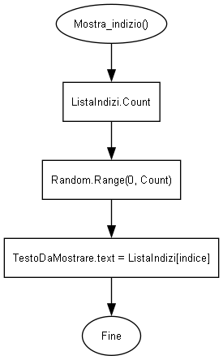
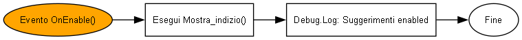

Gestisce la visualizzazione casuale di indizi testuali selezionati da una lista predefinita.
More...
|
| List< string > | ListaIndizi = new() |
| | Lista di stringhe contenente tutti gli indizi disponibili. Impostabile dall'Inspector.
|
|
| void | Mostra_indizio () |
| | Seleziona un indizio casuale dalla lista e lo visualizza nell'interfaccia utente.
|
| void | OnEnable () |
| | Metodo di Unity chiamato automaticamente quando il GameObject viene attivato.
|
| void | Start () |
| | Metodo chiamato una volta all'avvio dello script. Attualmente non contiene logica.
|
| void | Update () |
| | Metodo chiamato una volta per frame. Attualmente non contiene logica.
|
|
| TMP_Text | TestoDaMostrare |
| | Riferimento al componente TextMeshPro UI utilizzato per mostrare l'indizio selezionato.
|
Gestisce la visualizzazione casuale di indizi testuali selezionati da una lista predefinita.
◆ Mostra_indizio()
| void suggerimenti.Mostra_indizio |
( |
| ) |
|
|
private |
Seleziona un indizio casuale dalla lista e lo visualizza nell'interfaccia utente.
Flusso logico del metodo Mostra_indizio:

◆ OnEnable()
| void suggerimenti.OnEnable |
( |
| ) |
|
|
private |
Metodo di Unity chiamato automaticamente quando il GameObject viene attivato.
Flusso logico del metodo OnEnable:

◆ Start()
| void suggerimenti.Start |
( |
| ) |
|
|
private |
Metodo chiamato una volta all'avvio dello script. Attualmente non contiene logica.
◆ Update()
| void suggerimenti.Update |
( |
| ) |
|
|
private |
Metodo chiamato una volta per frame. Attualmente non contiene logica.
◆ ListaIndizi
| List<string> suggerimenti.ListaIndizi = new() |
Lista di stringhe contenente tutti gli indizi disponibili. Impostabile dall'Inspector.
◆ TestoDaMostrare
| TMP_Text suggerimenti.TestoDaMostrare |
|
private |
Riferimento al componente TextMeshPro UI utilizzato per mostrare l'indizio selezionato.
The documentation for this class was generated from the following file: